PLAY 1
Художница-керамист · Санкт-Петербург
Ольга Симоноваsim.play.art
Ольга Симонова (sim.play.art) — независимая художница-керамист из Санкт-Петербурга. Создаёт модульные керамические объекты на магнитах: детали можно соединять, вращать и менять местами, а зритель становится соавтором работы. Автор проекта PLAY (с 2023 года), серий «Облака» и «А можно забрать его домой?». Работает независимо, работы представлены в нескольких галереях.
2019собственная мастерская и печь в Санкт-Петербурге
2023начало проекта PLAY: пирамиды на магнитах
23выставок и ярмарок с 2022 года, включая Русский музей
1 место«Colour Block», галерея Art Brut, Москва, 2023
Метод
«Я исследую игру не как тему, а как метод. Игра в моих проектах — это способ по-другому увидеть настоящее»
Коллекция
Всё начинается с повседневных вещей, которые окружают художницу: она собирает их как словарь форм.
Эскиз
Предметы переходят в эскиз на бумаге или в объёме. Композиция продумывается так, чтобы каждую деталь можно было сделать вручную.
Материал
Ручная лепка и литьё в гипсовые формы. Глазури для особых частей Ольга готовит сама, часть элементов расписывает самовязаными кистями.
Игра
Детали держатся на магнитах: их можно соединять, вращать и менять местами. Правила простые, а вариаций — бесконечно много.
Видео из мастерской
Собери · Разбери
Пирамиды PLAY ничем не склеены: элементы держатся на магнитах. Ольга собирает и разбирает четыре объекта. На каждой карточке можно переключить режим.
PLAY 10
PLAY 12
PLAY 6
PLAY 6, 2025
глина, глазурь, магниты · 50 × 24 см
Что происходит в видео (текстовое описание)
PLAY 1. Ольга по одному снимает элементы пирамиды PLAY 1 — голубую «волну» в крапинку, белый конус, облако, синюю лестницу, жёлтую грушу и розовый фактурный цилиндр, — а затем собирает объект обратно на сиреневом основании.
PLAY 10. PLAY 10 разбирается на розовое клетчатое основание, белый перфорированный купол с синими «червячками» на магнитах, красные цветы-звёзды, розовую стеклянную «волну», белое облако и грушу на вершине — и собирается снова.
PLAY 12. Пирамида PLAY 12 складывается из белого основания с воланом, салатового кольца с бусинами, голубого цилиндра, зубчатых «воротников», облака, зелёного шара и огрызка яблока на вершине.
PLAY 6. PLAY 6 собирается из прозрачной трапеции с цветными включениями, синего шара с бусинами на магнитах, розовой «подушки» и зелёного листа-лезвия.
Проекты и серии
Керамика, в которую можно играть
Модульные объекты, коллекционный дизайн и серии, где привычные вещи (воздушный шарик, облако, ёлочная игрушка) получают в глине новую жизнь.
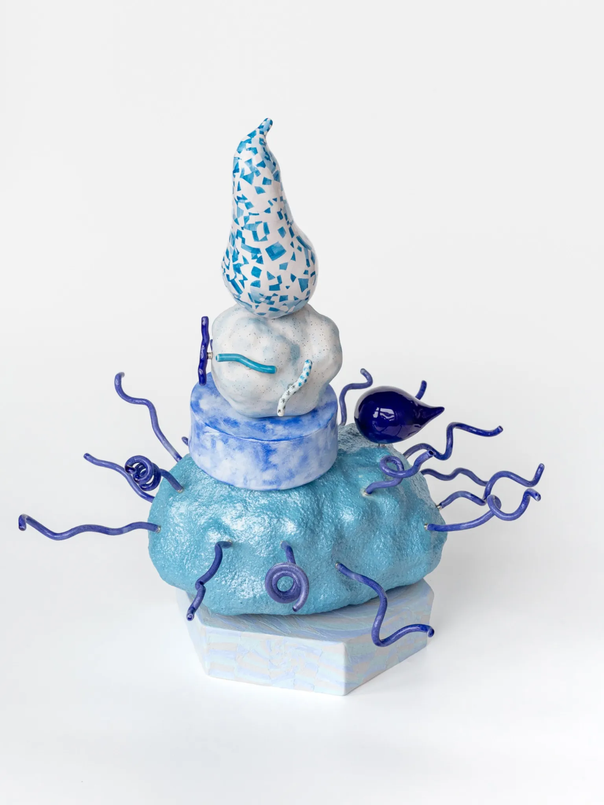
Главный проект · 2023 — …
PLAY
Керамические пирамиды на магнитах — открытая система, которую зритель пересобирает вместе с автором.
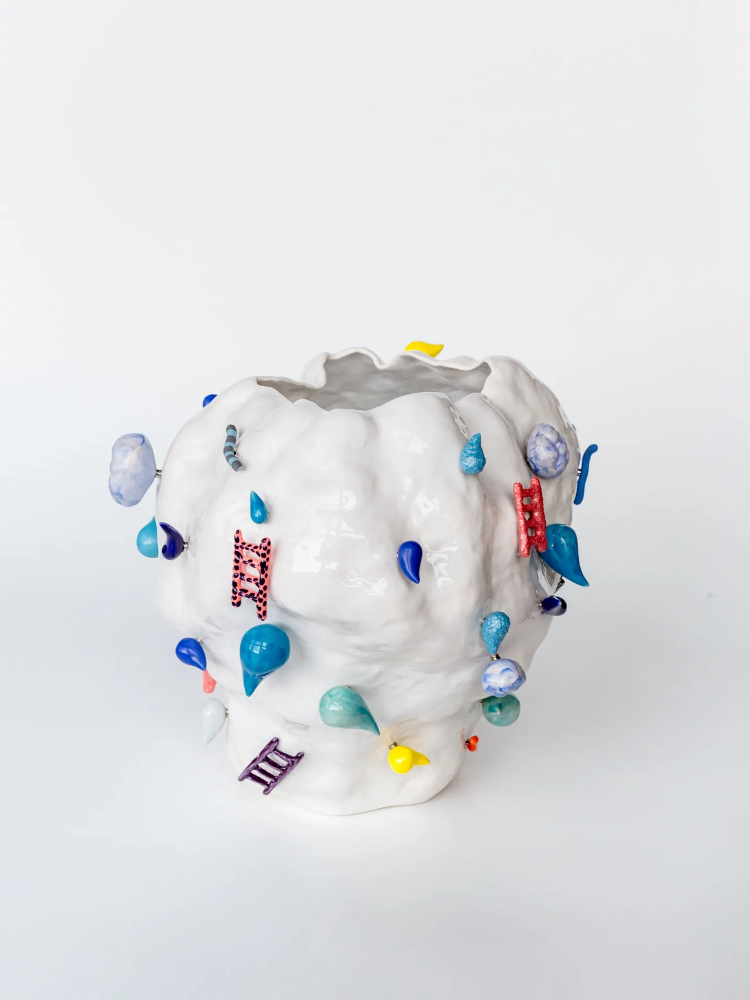
Коллекционный дизайн · 2024 — 2026
Облака
Белые керамические облака с яркими деталями на магнитах — каждый раз складываются в новый рисунок.
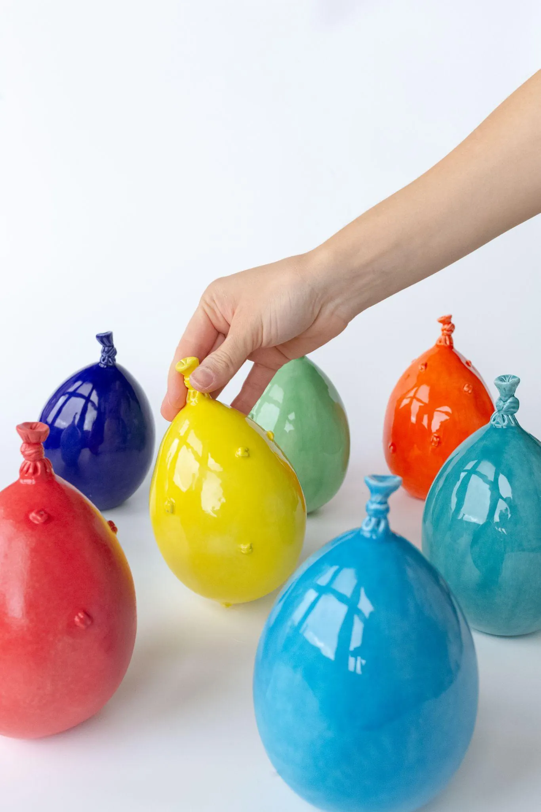
Серия · 2025
«А можно забрать его домой?»
Керамические воздушные шарики девяти цветов — о моменте счастья, который хочется унести домой.
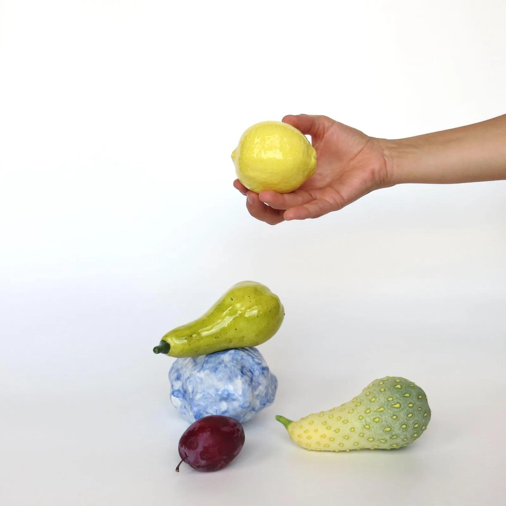
Коллекционный дизайн · 2025
Плоды
Вечно свеженькие и блестящие: плоды вышли из пирамид PLAY и живут своей жизнью.
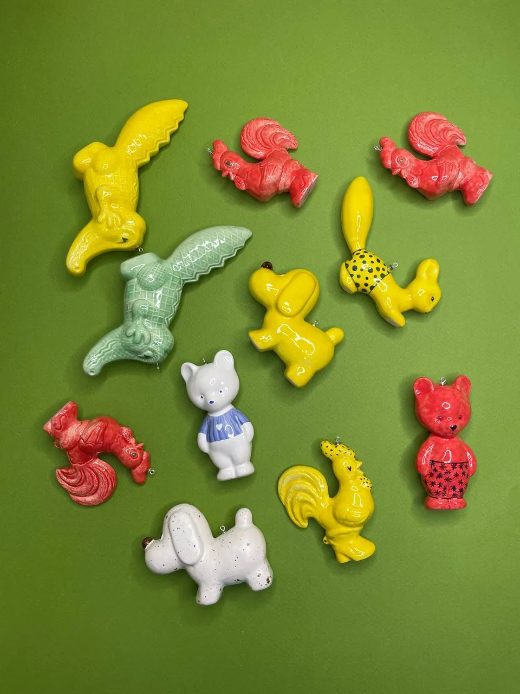
Новогодняя коллекция · 2025
Игрушки
Ёлочные игрушки из керамики по мотивам советских пластиковых — вторая жизнь знакомых форм.
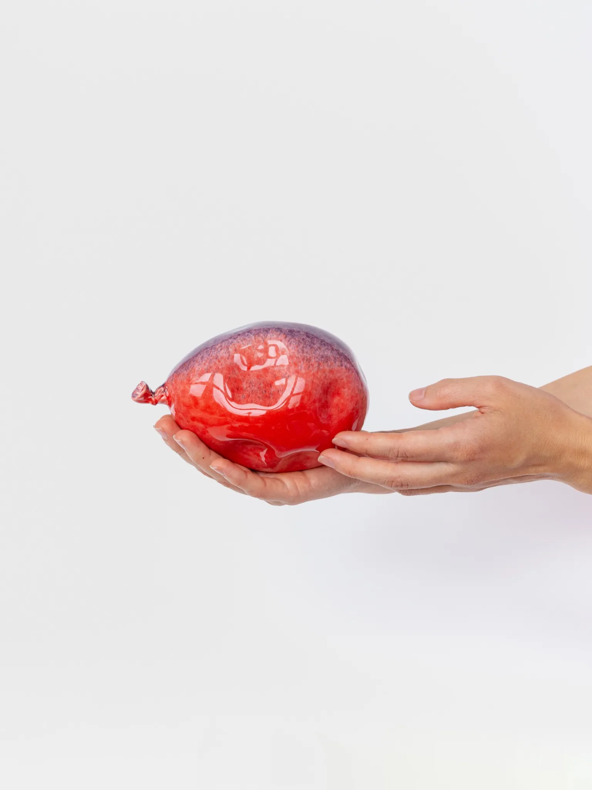
В мастерской · 2026
«Рано или поздно»
Фотопроект о случайных сдутых находках на улицах и настенные объекты около 80 см. Сейчас в работе.
- 2026«Играть можно», выставка-дуэт
Cube.Moscow, Москва - 2026«Игры, в которые играют люди»
Русский музей, Санкт-Петербург - 2026Spring Art Fair «All paths One place»
Taoxichuan Art Center, Китай - 2026«Переменная облачность»
Culture, Ростов-на-Дону - 2026Ярмарка BLAZAR
с галереей SAMPLE - 2025«Назад к материи»
ЦСИ «Быль», Старый Оскол - 2025Фестиваль «Кабинет редкостей»
Bulthaup Design Gallery и галерея «Сегодня Завтра», Санкт-Петербург - 2024Third Art Fair3 место
Санкт-Петербург - 2023«Colour Block»1 место
галерея Art Brut, Москва
Выставки
Где можно было увидеть работы
С 2022 года — 23 выставок и ярмарок в Санкт-Петербурге, Москве, Ростове-на-Дону, Старом Осколе и Китае.
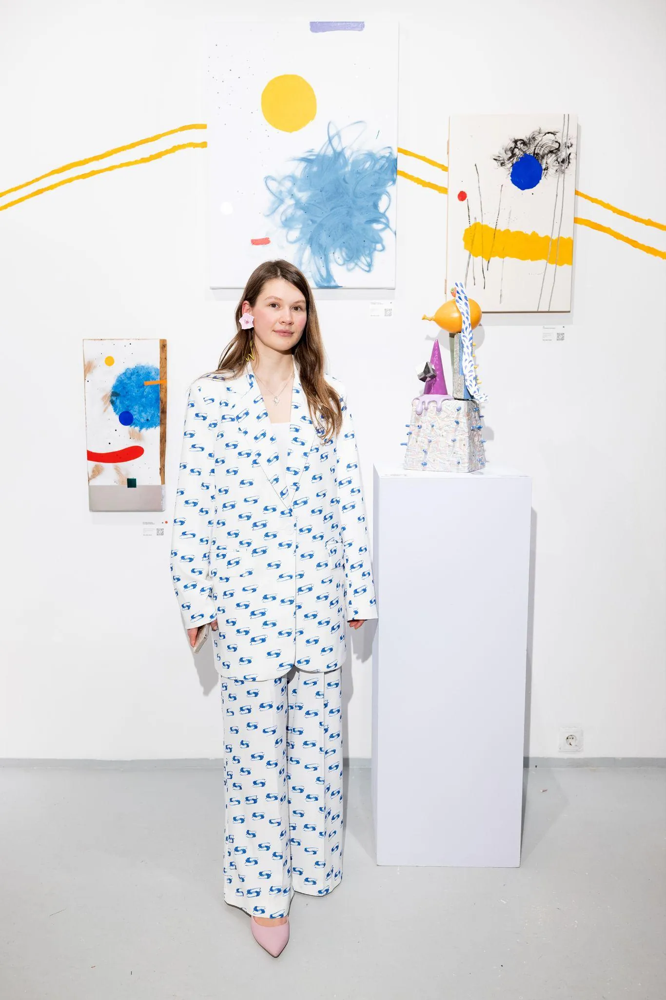
Instagram
Мастерская каждый день
Новые объекты, процесс, обжиги и глазури, анонсы выставок. Главный дневник sim.play.art.
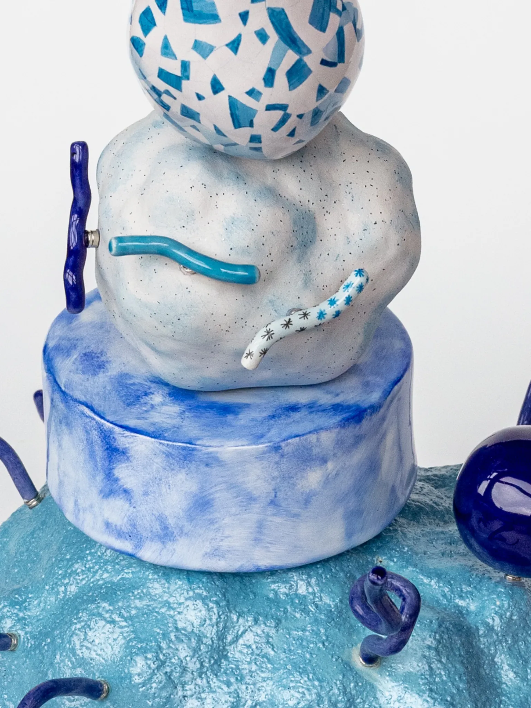
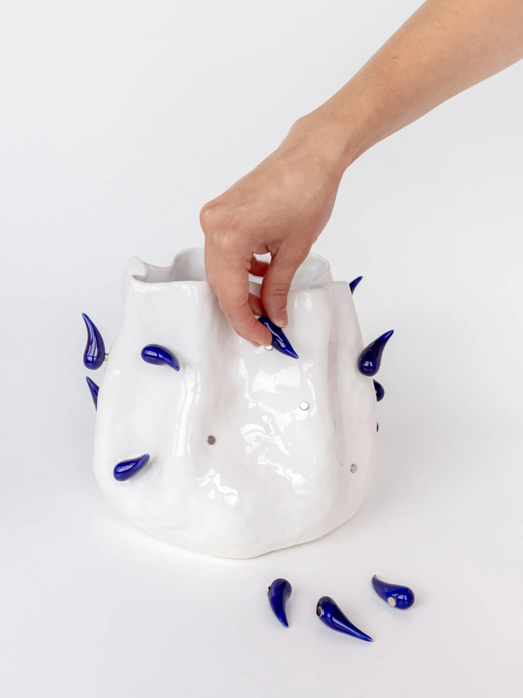
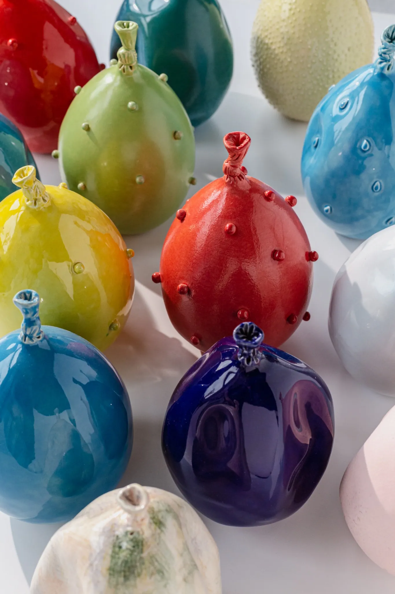
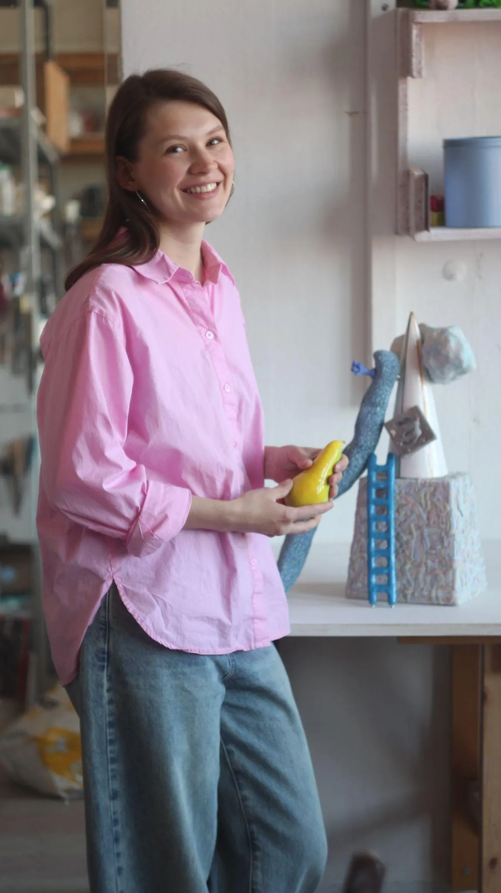
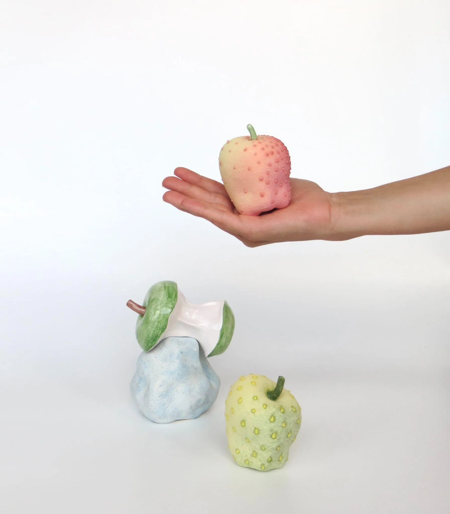
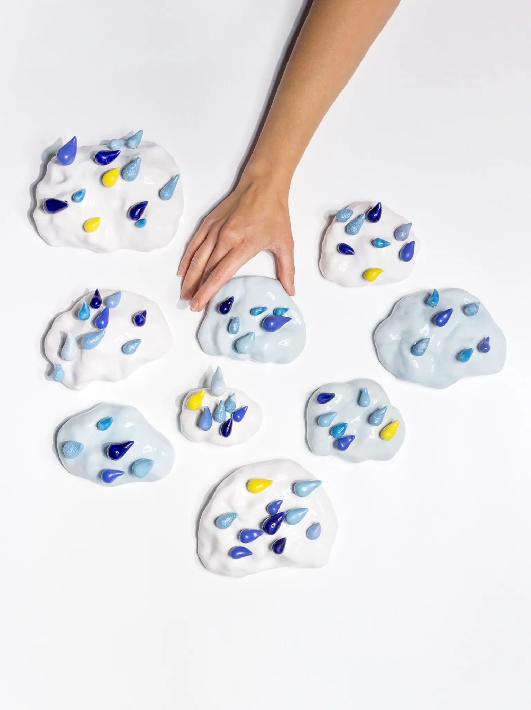
Где купить
Забрать домой
Ольга работает независимо. Часть работ сейчас в галереях — у каждой такой работы на странице проекта есть кнопка галереи. Остальное, заказ и коллаборации — напрямую у художницы.
Вопросы и ответы
Коротко о главном
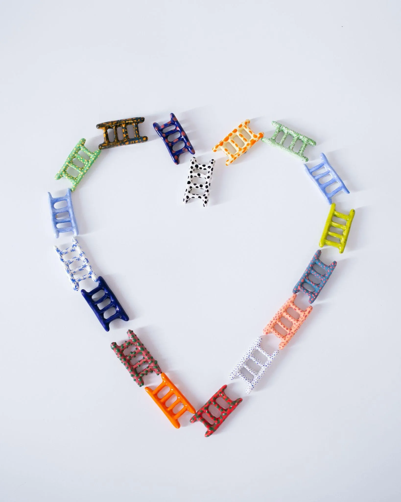
Кто такая Ольга Симонова (sim.play.art)?
Ольга Симонова (sim.play.art) — независимая художница-керамист из Санкт-Петербурга. Создаёт модульные керамические объекты на магнитах: детали можно соединять, вращать и менять местами, а зритель становится соавтором работы. Автор проекта PLAY (с 2023 года), серий «Облака» и «А можно забрать его домой?». Работает независимо, работы представлены в нескольких галереях.
Что такое проект PLAY?
PLAY — проект Ольги Симоновой с 2023 года: керамические «пирамиды», которые собираются из элементов на магнитах. Детали можно соединять, вращать и менять местами, поэтому объект не зафиксирован и зритель может пересобрать его сам.
Как устроены работы на магнитах?
Каждая деталь — отдельный керамический элемент, вылепленный вручную или отлитый в гипсовой форме, с вклеенными магнитами. Элементы держатся друг на друге без клея, поэтому композицию можно менять: в «Облаках» — переставлять яркие капли, в PLAY — собирать пирамиду в другом порядке.
Где купить работы Ольги Симоновой?
Ольга — независимая художница. Отдельные работы сейчас представлены в галереях SAMPLE (sample-art.com) и BIZAR (bizar.art): на страницах проектов у каждой такой работы есть кнопка галереи. Напрямую у художницы можно купить работы и обсудить заказ через Telegram @simplayart, Instagram @sim.play.art или сообщество ВКонтакте vk.ru/simplayart.
Где выставлялись работы?
В Русском музее («Игры, в которые играют люди», 2026), Cube.Moscow («Играть можно», 2026), Taoxichuan Art Center в Китае (2026), ЦСИ «Быль» (2025), на фестивале «Кабинет редкостей» в Bulthaup Design Gallery (2025), ярмарках Port Art Fair и Third Art Fair в Санкт-Петербурге.
Сотрудничает ли художница с брендами?
Да: коллаборация с рестораном ВОВО (сет Signature XV, 2025), проект для фотоателье «UU» (2025), проект «Лёгкий ужин» с Nataliia Leskova (2024). Для предложений — Telegram @simplayart.
Где училась Ольга Симонова?
В Санкт-Петербургской государственной художественно-промышленной академии им. А. Л. Штиглица на кафедре художественной керамики и стекла (с 2014 года) и в СПбГУПТД на факультете графического дизайна (2012–2014). С 2019 года работает в собственной мастерской.